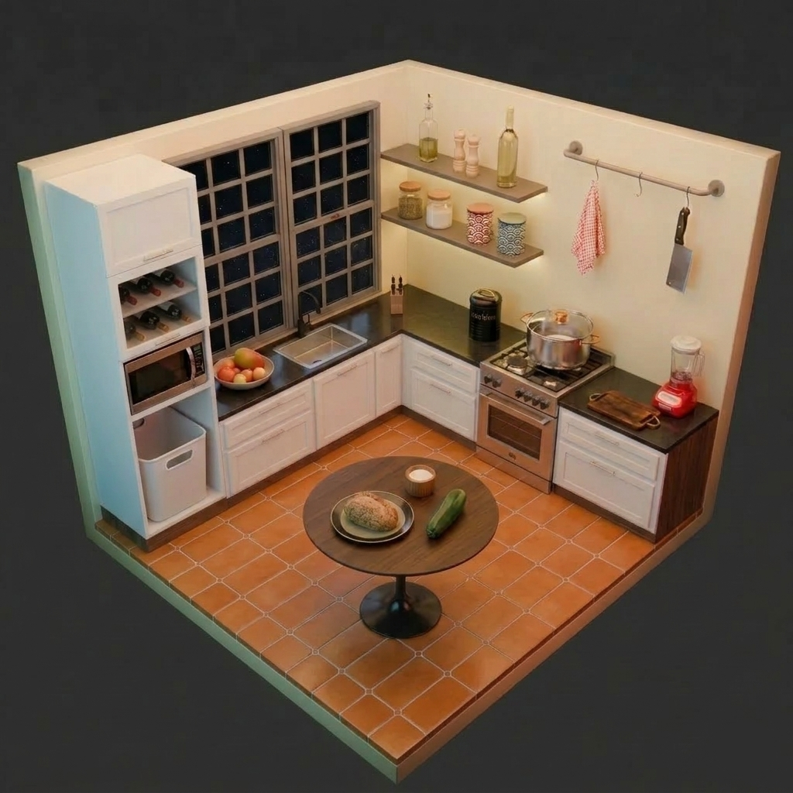
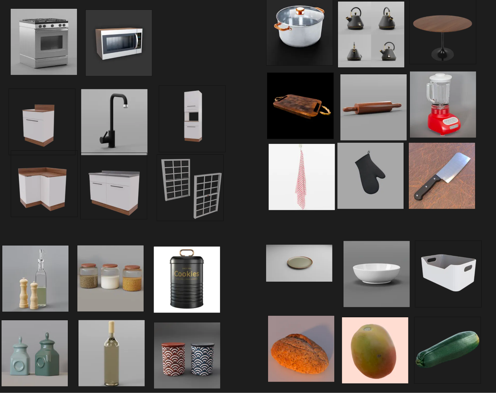
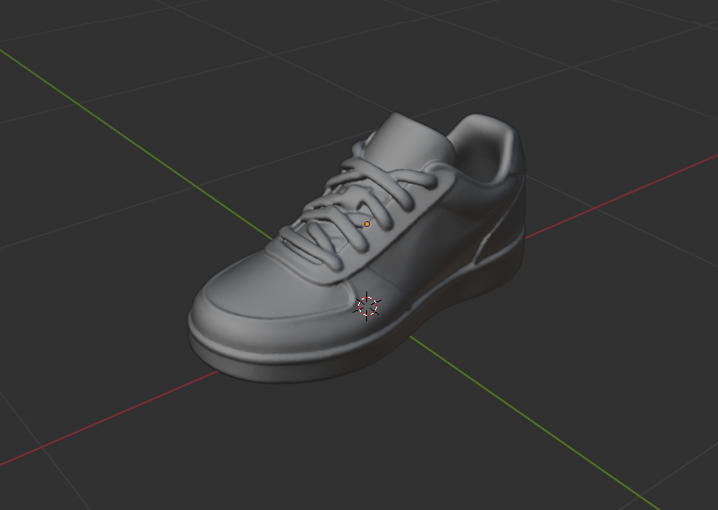
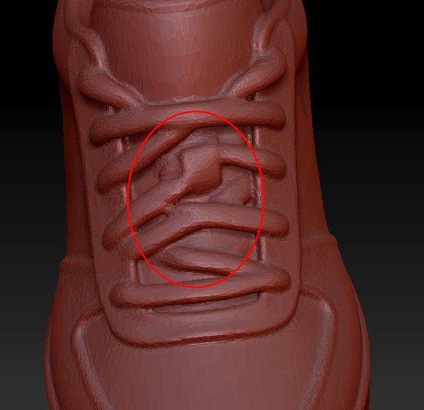
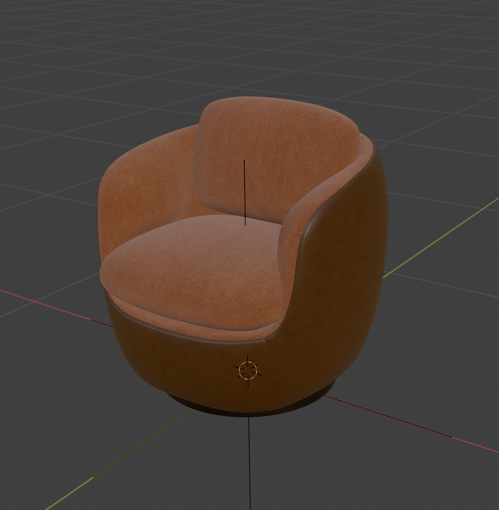
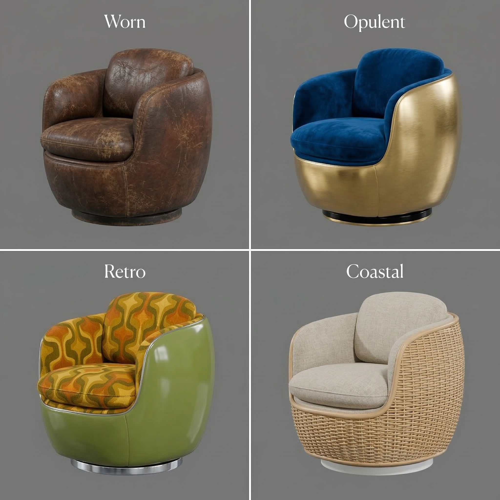
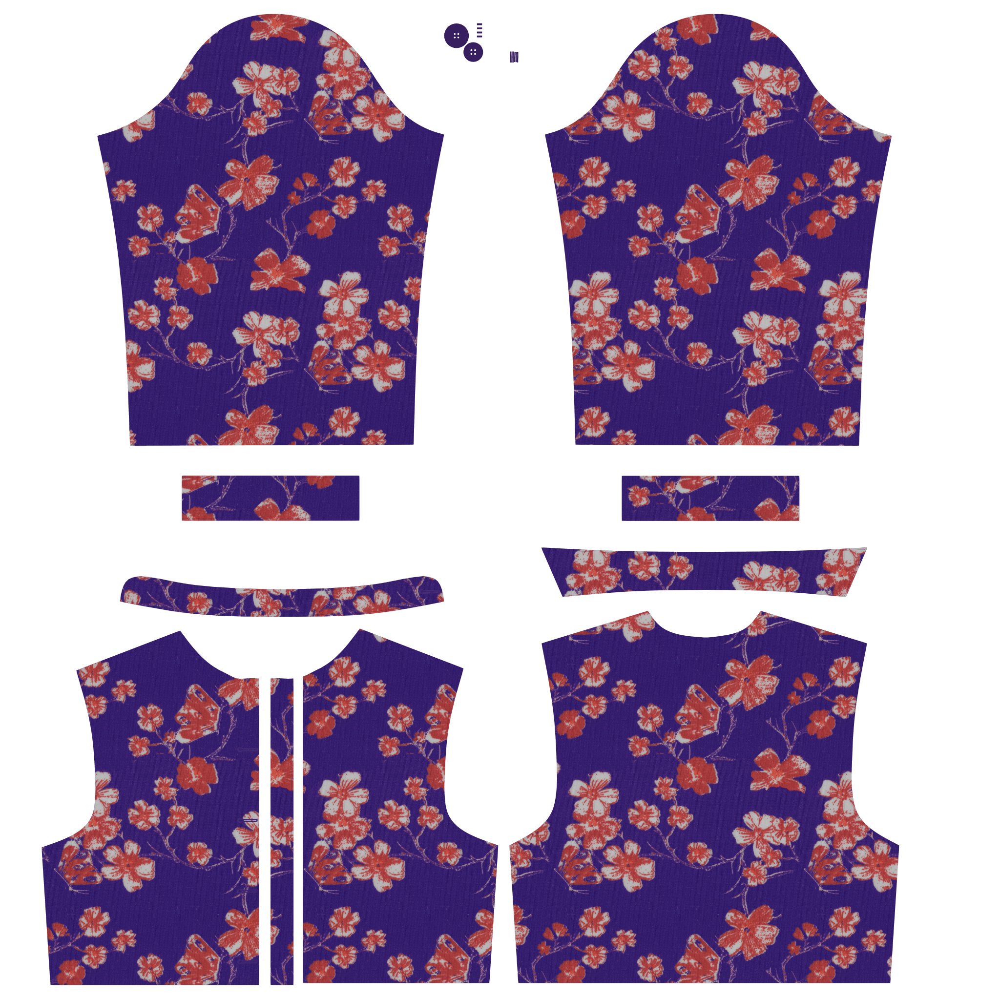
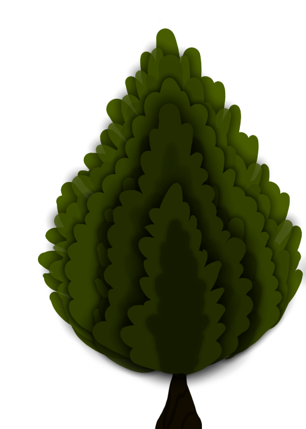
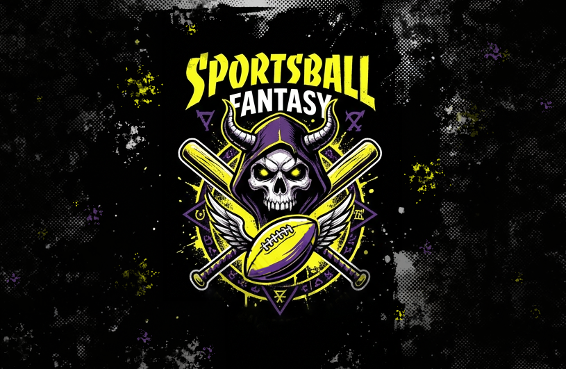

These are solo projects built using traditional and AI-accelerated pipelines — Cursor, ComfyUI, Claude Code, and others. Some are prototypes for games. Some are pure visual development: character systems, brand identity, and art direction done without a team or a brief. The playable versions live at utilityinfielder.com.
BizzyDad
A life-management game concept. I developed the full character roster solo — 15 advisors, coaches, and specialists, each with a distinct personality and visual identity that reads at small portrait size. Consistent style across the full cast without a style guide document; the consistency lives in the pipeline and in the art direction calls made during generation.


Dirtbagz
A robot squad-builder baseball game — you assemble a team of modular robots, play arcade-style matches, and scavenge parts from post-game loot chests to upgrade your roster. Visual identity draws from NES-era RBI Baseball with expanded color and modern juice. Same AI-accelerated pipeline as BizzyDad; opposite mood. I developed the splash art, background, UI concepts, and rewards screen independently.


Gateaux
A cozy language-learning game where players run a magical bakery, taking orders in new languages and decorating pastries to unlock characters and story. I explored the design, the game mechanics, the story, and the visual identity. I developed the character lineup and the visual identity using AI tools — building a warm, distinctive style that scales from UI icons to splash art.


Portrait Studies
Philosophical figures as illustrated characters — Freud, Kristeva, Lacan. An exploration of how much personality and period detail can be embedded into a consistent portrait style through prompt engineering and iterative generation.


Task Briefs
Art direction writing samples — task briefs written for real game art workflows. Each one represents the handoff between an lead artist and a contract artist or external partner. The brief provides a clear creative prompt, defined starting materials, technical constraints, and a specific deliverable list.
Kitchen Set Dressing
Dress a game kitchen scene using 34 pre-made assets. Placement and composition only — no asset modification.
Kitchen Set Dressing
Dress a game kitchen scene using 34 pre-made assets. Placement and composition only — no asset modification.


Task Prompt
You're dressing a kitchen scene for a casual cooking game. The goal is a complete, game-engine-ready set that feels like an active kitchen — functional, charming, and ready to drop into a prototype.
A starting .blend file contains 34 kitchen assets (32 models, 2 materials) organized into collections. Use them as-is. Do not modify asset geometry, materials, or UV maps. Your job is placement and scene composition only.
The reference image (001_KitchenBeautifulCorner.png) shows one possible arrangement — treat it as inspiration for spatial feel and prop density, not a layout you need to match. The asset lineup (001_KitchenSetDressing_AssetsLineup.png) is your inventory. You don't need to use every asset, but the scene should feel dressed and complete. Every major surface area — counters, floor, walls — should have intentional placement.
The scene does not need to be lit or rendered. All deliverables are for game-engine import review and viewport screenshots only.
Deliverables
001_KitchenSetDressing.blend— all transforms applied (location, rotation, scale), all external data packed, collections organized, objects named001_KitchenSetDressing_Ortho.png— orthographic viewport color screenshot001_KitchenSetDressing_TopDown.png— top-down viewport color screenshot001_KitchenSetDressing_Wireframe.png— wireframe viewport screenshot
Starting State
The starting .blend file contains all 34 kitchen assets pre-imported and organized into three collections: Architecture (room shell, cabinets, floor, windows), Furnishings (table, open shelving), and Objects (all loose props — appliances, food, utensils, containers). Objects are named. No scene arrangement has been done — placement is your task.
Overall Context
This is a proof-of-concept set for a casual cooking game in early prototyping. The output will be reviewed by stakeholders and used as a rough layout reference before full production begins. Visual clarity and a convincing spatial read matter more than polish. The asset style is fixed — it ships as-is.
Starting state: 001_KitchenSetDressing_Assets.blend
Sneaker Retopologize
Build clean game-ready topology over a high-res sneaker sculpt, targeting under 2,500 triangles.
Sneaker Retopologize
Build clean game-ready topology over a high-res sneaker sculpt, targeting under 2,500 triangles.


Task Prompt
The high-res sculpt exists. Your job is to build clean game topology over it. This is a sneaker, and it's going into a stylized console title — think Fortnite, Valorant, or League of Legends. That means readable silhouette, efficient geometry, and no wasted polygons chasing detail the normal map will handle.
The retopology should respect the shoe's major zones: sole and midsole, toe cap, upper, tongue, collar, and lace area. These don't need to be separate objects. But the edge loop structure should reflect the transitions between them — in wireframe, a reviewer should be able to see where one zone ends and another begins.
Target is under 2,500 triangles for the full shoe. Quads throughout, with triangles only where the topology genuinely demands it. No n-gons.
The lace crossing area in the high-res has messy, tangled geometry — an artifact of how the laces were generated. Do not trace it. Retopologize the lace zone with clean, intentional loops that describe the lace forms as they should read, not as the high-res data happens to be. The silhouette and general form of the laces should still match, but the underlying topology should be clean.
The output needs to be bake-ready. A normal map bake from the high-res to this retopo isn't part of this task, but the topology has to be clean enough that it would work without major artifacts — no extreme stretching, no pinching across primary surfaces, poles placed away from silhouette edges.
Deliverables
002_SneakerRetopologize.blend— retopo mesh complete, high-res in a separate hidden collection, all transforms applied002_SneakerRetopologize_Wireframe_Front.png— wireframe viewport, front orthographic view002_SneakerRetopologize_Wireframe_Side.png— wireframe viewport, lateral orthographic view002_SneakerRetopologize_Shaded.png— smooth shaded viewport, 3/4 view
Starting State
The starting .blend file contains one object: a high-resolution sneaker sculpt. It's a full shoe — not split into zones or separate meshes. Transforms are applied. No UVs. Use it as your retopology reference only. Do not modify or delete it.
Overall Context
This is a pipeline evaluation for game-ready asset production. The reviewer will check wireframe topology for zone clarity and flow, triangle count, silhouette match against the high-res, and shading quality. A strong result looks efficient in wireframe and reads identically to the sculpt in silhouette from any angle.
Starting state: 002_SneakerRetopologize_HighRes.blend
Material Variations
Create four procedural PBR material themes for an armchair using Shader Nodes. No imported textures.
Material Variations
Create four procedural PBR material themes for an armchair using Shader Nodes. No imported textures.


Task Prompt
You're creating four distinct material themes for an armchair using Blender's shader node editor. The model and its original materials are provided — your job is entirely materials.
The chair has three zones: the upholstered seat, the leather outer shell, and the metal base. Create four complete material sets — Worn, Opulent, Retro, and Coastal — each with its own version of all three zones. Build every material using Principled BSDF with procedural textures. No imported textures. No modeling changes. No UV work.
Each material should have real surface character — not just a color change. Use roughness, bump (via Noise or Voronoi nodes), and color together to make the seat feel like fabric, the shell feel like leather, and the base feel like metal. The Worn seat and the Opulent seat should read differently in how light hits the surface, not just in hue.
Create four themed variants of the chair — one per theme — and arrange them in a single scene. A render script — B004_render_setup.py — is included with this task. To render each variant, hide the original chair and the other three themed variants so only the active theme is visible. Load the provided script into Blender's Text Editor, set OUTPUT_PATH to the appropriate filename (e.g. "//B004_Worn.png"), and run it. The script handles camera, lighting, and render settings. Repeat for each of the four themes.
Deliverables
B004_MaterialVariations.blend— all four variants in the scene, organized into collections named by theme, materials named clearly by zone and themeB004_Worn.png,B004_Opulent.png,B004_Retro.png,B004_Coastal.png— one render per theme at 1080x1080, neutral grey background, consistent camera and lighting across all four
Starting State
A Blender file with a single armchair model. Three materials are already assigned: seat upholstery, leather outer shell, and metal base. No lighting or camera is set up. A render script (B004_render_setup.py) is included with this task — use it for all renders. You are responsible for material creation, scene duplication, and organizing the final file.
Overall Context
This is a material design evaluation. Output will be reviewed for how convincingly each theme reads across all three zones, and whether the node-based PBR materials demonstrate real surface character — believable fabric, leather, and metal — rather than flat color swaps. Each of the four themes should be immediately recognizable at a glance.
Starting state: B004_MaterialVariations.blend
Provided scripts: B004_render_setup.py
Blouse Variations
Create three distinct fabric variations for a game blouse: floral, geometric, and denim.
Blouse Variations
Create three distinct fabric variations for a game blouse: floral, geometric, and denim.


Task Prompt
This is a task to create texture/color variations for a video game blouse asset. The base blouse is done: indigo fabric, red floral print, UV-unwrapped and ready. Now it needs a wardrobe. The character will have three alternate fabric options, each a distinct look from the others and from the original.
The three variants are a different floral, a geometric, and a denim.
The floral should feel like a different garment. Different motif, different color, different energy from the original. It's not a recolor of what's already there.
The geometric is a pattern built from shapes. Stripes, tiles, a grid, a diamond repeat. Your call on what works. It should feel deliberate and read cleanly at game texture resolution.
The denim is a fabric interpretation, not a flat fill. Wash, weave, subtle fading, stitching detail — the character of the material is yours to decide. Light wash, dark indigo, worn and distressed, or clean and structured. It should read as denim at a glance.
For all three variants, paint the pattern or fabric directly in GIMP or work from stock photography as a base. Either approach is fine. The result needs to be game-ready: clean at texture resolution, no obvious tiling artifacts, no dirty edges at UV borders.
The Blender file is included if you want to see how the texture reads on the model.
Deliverables
G002_BlouseVariations.xcf— working file with each variant in its own clearly named layer group, original preservedG002_BlouseVariations_Floral.png— flattened export, matching the base texture resolutionG002_BlouseVariations_Geometric.png— flattened export, matching the base texture resolutionG002_BlouseVariations_Denim.png— flattened export, matching the base texture resolution
Starting State
Open G002_BlouseVariations.xcf in GIMP. The file contains the base blouse texture laid out as a UV unwrap. The pattern and background are on separate layers. gimp_layers.png shows the current layer structure for reference.
DG100284diffuse1001png.png is a flat PNG of the base texture.
G002_BlouseVariations.blend contains the character model with this texture applied. Open it in Blender if you want to preview how your variants read on the mesh. This is optional.
Overall Context
This is a texture variant task for a game character. The reviewer will check that each variant reads as a distinct, intentional fabric design at game texture resolution, that the XCF is cleanly organized with the original preserved, and that the exports are correctly named and match the base texture resolution.
Starting state: G002_BlouseVariations.xcf
Optional: G002_BlouseVariations.blend
Foliage Alpha
Design four distinct hand-painted leaf cards for a stylized game tree, each genuinely different.
Foliage Alpha
Design four distinct hand-painted leaf cards for a stylized game tree, each genuinely different.


Task Prompt
This is a visual development task for a stylized game tree. The goal is four foliage cards — each one a different take on what a leaf card for this tree could be.
The reference (leaf_original.png) shows you where the style lives. The existing tree uses a flat, layered, hand-painted approach. Your cards don't need to match it. They're exploring what else this tree could be. Different shapes, different color directions. What reads well as a billboard quad in a game environment, what feels worth pursuing.
Each card should feel distinct from the others in shape, color, and complexity. Not four variations on the same idea — four genuinely different directions.
Paint four cards. Deliver each with a clean alpha channel on a transparent background, ready for use as a billboard quad.
Deliverables
frond_01.png— 1024x1024 RGBA, clean alphafrond_02.png— 1024x1024 RGBA, clean alphafrond_03.png— 1024x1024 RGBA, clean alphafrond_04.png— 1024x1024 RGBA, clean alphaG003_FoliageAlpha.xcf— working file with layers organized and named by card
Starting State
No project file. Starting from scratch in GIMP.
The reference folder contains three files. leaf_original.png is a painted stylized tree showing the hand-painted aesthetic and the color and layering approach used in the original. leaf_concepts.png shows six different leaf form variations, labeled A through F, as shape inspiration. LeafCards_blender.png shows how foliage cards are used as billboard quads on a 3D tree in-engine — useful context for how these textures will actually be applied.
The reference files are for reference only — not a base to paint over. Each card should be painted from scratch.
Overall Context
Foliage card painting is a standard part of game environment and character art pipelines. Artists paint leaf cards that get applied as flat billboard quads on 3D tree meshes — it's how most stylized game trees are built. This task reflects the visual development phase of that process, where an artist explores different card directions before a final style is locked. The reviewer will evaluate whether the four cards are distinct from one another, read well as stylized game foliage, and are technically clean for in-engine use.
Apparel Mockups
Build a six-piece merch line for a fantasy sports brand. Streetwear-adjacent, skate-influenced, punk-sports edge.
Apparel Mockups
Build a six-piece merch line for a fantasy sports brand. Streetwear-adjacent, skate-influenced, punk-sports edge.


Task Prompt
Sportsball Fantasy is a fantasy sports app company that wants a merch line. The brief is streetwear-adjacent, skate-influenced, wearable. Thrasher magazine energy, not team store energy. The logo is already there: skull in a football helmet, crossed bats, lightning, attitude built in. The garments should match it without going over the top.
Six pieces: a t-shirt, hoodie, crewneck sweater, cardigan, cap, and beanie. Each one gets a mockup built over the provided flat technical drawing base. These are concept mockups, not production-ready artwork. Image manipulation is the workflow: fill the garment with color, composite the logo and any supporting graphics, make the design decisions that turn six blank templates into a cohesive merch line.
Think about colorways that let the logo land. Think about where graphics live on each piece, what placement makes sense for that garment. A chest hit on the tee, a full back graphic on the hoodie, a front panel on the cap — there's room to make those calls. The cardigan has structure to work with: the button band, pockets, and ribbed trim are all real estate. Supporting graphics are welcome if they pull the line together. Keep the palette tight across all six so they read as a family.
The aesthetic is modern streetwear with a punk-sports edge. Wearable, not costumy. Something someone would actually buy.
Deliverables
G013_Tshirt.xcf,G013_Hoodie.xcf,G013_Cap.xcf,G013_Beanie.xcf,G013_Crewneck.xcf,G013_Cardigan.xcf— working files, garment fill and graphics on organized layers, line art preserved on topG013_Tshirt.png,G013_Hoodie.png,G013_Cap.png,G013_Beanie.png,G013_Crewneck.png,G013_Cardigan.png— flat PNG exports, transparent or white background
Reference Images
ref_apparelMockupsPhoto.png — A photo-style mockup showing a full merch line displayed on mannequins: cap, beanie, t-shirt, hoodie, crewneck, and cardigan together. Use this as a target for how the line should read as a cohesive set — colorway consistency, graphic placement, and overall presentation.
ref_sampleApparelDrawings.png — A flat technical drawing with graphics composited over the base, showing the expected output format for this task. The line art base is preserved, fills and graphics sit underneath it, and the result reads as a finished mockup drawing rather than a photo.
Starting State
Six flat technical drawing base files are provided, one per apparel type. These are clean black line illustrations showing front, back, and side views (single view for the beanie). They're the blank canvas.
sportsballFantasy_logo.png is the Sportsball Fantasy brand logo. It's the primary graphic element across all six pieces.
Open a drawing base in GIMP to start each piece. Keep the line art on a top layer so it reads over your fills and graphics.
Overall Context
This is a merchandise concept package for a fantasy sports app. The mockups are for internal review and potential use on the company's website. The reviewer will check that the logo reads clearly on every piece, that all six items feel like a cohesive line, and that the aesthetic hits the brief: modern streetwear with a skate and punk-sports edge. This is concept and image manipulation work, not vector production.
Logo: sportsballFantasy_logo.png
Reference: ref_apparelMockupsPhoto.png, ref_sampleApparelDrawings.png